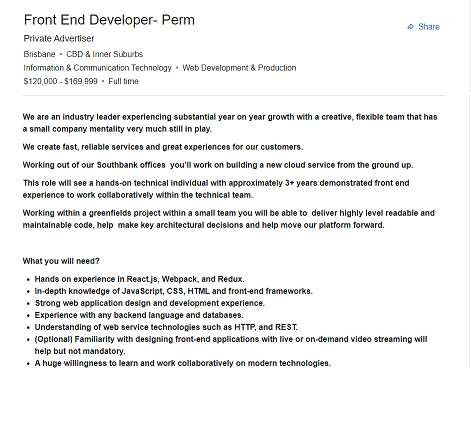
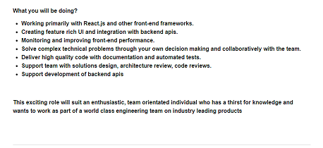

My future in IT
Front end developer


This position works within client requirements to create client a cloud service with attendant applications. The company is looking for a developer to work in a team on a new project, creating everything from the ground up.
The position requires experience with a range of commonly used web development languages and tools. Javascript tools: React
(React, A JavaScript library for building user interfaces) Webpack
(Webpack, Bundle your assets) and Redux
(Redux, A predictable state container for js apps); along with HTML, CSS, HTTP and REST
(Restful API).
The employer has advertised for a ‘front end developer’ but it appears they also require some experience with back end development and APIs. This might be limited to ensuring the front end component works seamlessly with the Back end and thus ‘supports’ it, however it appears that some back end experience, particularly with databases and database languages (eg SQL) are necessary.
They are asking for 3 years experience as a minimum and place significant emphasis on collaboration within the team and generally. However, it seems some independent decision making will also be required of the successful applicant.
I am currently unsuitable for the position as advertised. I have familiarity with some of the concepts but no real hands on.
I do, however, have extensive experience working in teams, both for projects and long term. I am also very experienced in making independent decisions to resolve issues in my work.
I have in the past, worked in a minor way with HTML, CSS and JavaScript but would in no way represent my skills as ‘experienced’. I will require significant training to skill up to the requisite level for this position.
To skill up with the requisite skills, I will continue to work towards the Bachelor of Information Technology degree, focussing where possible on subjects that will allow me to learn web development skills.
Outside of formal study, I will develop web pages and applications until I am confident in my design skills. I will seek out other avenues of training in areas that particularly need development, ie, java script, back end apis and UI design.
As I am ‘starting from scratch’ and skilling up, there will be a significant time investment required before I am able to do more than learn.